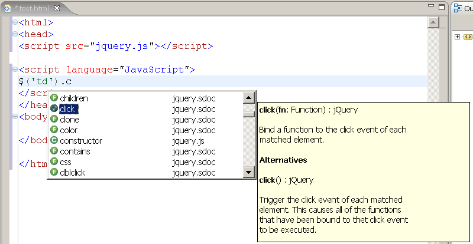

Below you will find a zip-file with a scriptdoc-file for jQuery and a slightly modified jquery.js file. With this scriptdoc-file, you can add Code Assist for jQuery to the Aptana webeditor. The changes to jquery.js are only to link it to the scriptdoc-file, there are no functional changes.
Download jquery-1.1.1.zip for jQuery 1.1.1
Update: The scriptdoc-file is now part of Aptana. Just open a Web library project and choose jQuery. The version on this site might be newer, so it might still be usable.
Unzip the zip-file and drag the .js- and .sdoc-files to the Code Assist view. Or replace your jquery.js-file with the two files from the zip-file. Make sure the profile with these two files is the current profile in the Code Assist view.
The next version of Aptana will also have updated jQuery-documentation. The layout will also better fit the small column layout of the help View. You can find the online version here:
You can download the documentation and add it to Aptana yourself.
Just unzip the file and add it to the documentation folder. For Windows:
C:\Program Files\<your Eclipse/Aptana folder>\plugins\com.aptana.ide.documentation_<Aptana version and build>\libraries_docs\jquery\docs
You might have several versions in your plugins-folder. Make sure you choose the latest.
JQuery is a very good JavaScript library and Aptana is a very good HTML/CSS/JavaScript-editor. Both are quite new and both are free. The files on this website add Code Assist (better known as auto-completion) for jQuery to Aptana. So now programming websites is even easier. You can find more information here:
The Scriptdoc-file and documentation is generated from the XML-file with jQuery-documentation. This is done with PHP. The Scriptdoc-file is tested in Aptana 0.2.7. The Scriptdoc-file might in the future be used in other editors with Scriptdoc-support. Read more about Scriptdoc on the Scriptdoc website.
If you have questions or suggestions, please let me know.